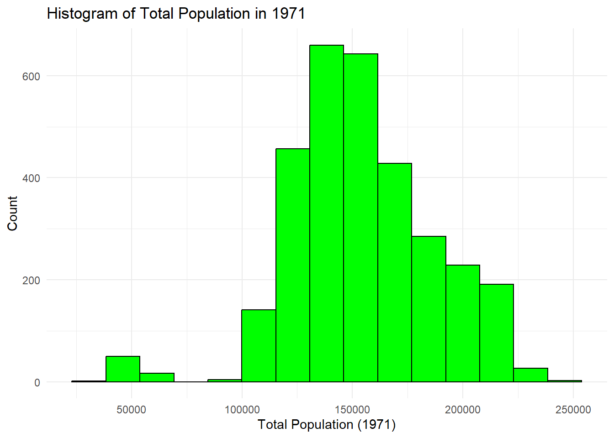
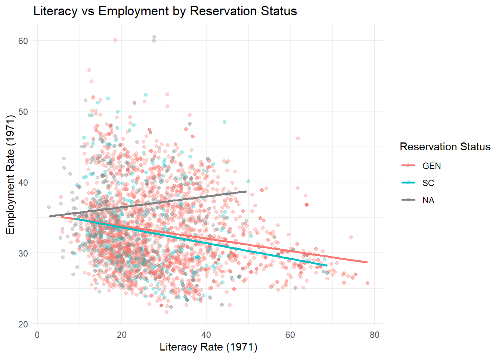

13 Feedback: Practical Visualizations
For the Quarto Markdown files, you can include texts, like you are just regularly typing in Word. Only have the codes in code chunks then the analysis as text, rather than as comments.
Use
str()andsummary()by loading necessary libraries:ggplot2anddplyr## 'data.frame': 3134 obs. of 21 variables: ## $ State_number_2001: int 2 2 2 2 2 2 2 2 2 2 ... ## $ AC_no_2001 : int 1 2 3 4 5 6 7 8 9 10 ... ## $ AC_number_1976 : int 1 2 3 4 5 6 7 8 9 10 ... ## $ State_name_1976 : chr "Himachal Pradesh " "Himachal Pradesh " "Himachal Pradesh " "Himachal Pradesh " ... ## $ AC_name_1976 : chr "Kinnaur" "Rampur" "Rohru" "Jubbal-Kotkhai" ... ## $ AC_type_noST : chr NA "SC" "GEN" "GEN" ... ## $ tot_pop71_true : int 49835 56788 58969 50083 46745 53083 47237 55368 51571 46816 ... ## $ SC_percent71_true: num 19.4 33.1 29.5 24.7 28.9 ... ## $ Plit71 : num 27.7 25.7 18.9 30.8 18.5 ... ## $ Plit71_SC : num 14.07 13.67 5.64 18.19 11.15 ... ## $ P_W71 : num 60.5 52.3 34.1 50.7 60.1 ... ## $ P_al71_SC : num 12.4 1.65 6.98 8.06 2.89 ... ## $ P_al71_nonSC : num 4.29 1.05 8.29 8.17 1.61 ... ## $ P_elecVD01 : num 100 100 98.3 100 100 ... ## $ P_elecVD01_sc : num 100 100 97.8 100 100 ... ## $ P_educVD01 : num 93.1 92.9 86.9 72.2 79.1 ... ## $ P_educVD01_sc : num 94.8 95.8 87.4 74 79 ... ## $ P_medicVD01 : num 60.4 44.4 34 27.1 25.7 ... ## $ P_medicVD01_sc : num 58.7 48.7 32.9 29.9 25.4 ... ## $ P_commVD01 : num 94.7 70.9 74.7 91.9 52 ... ## $ P_commVD01_sc : num 90.2 71.8 77.3 91.8 54 ...## State_number_2001 AC_no_2001 AC_number_1976 State_name_1976 AC_name_1976 AC_type_noST ## Min. : 2.00 Min. : 1.0 Min. : 1.00 Length:3134 Length:3134 Length:3134 ## 1st Qu.: 9.00 1st Qu.: 49.0 1st Qu.: 56.25 Class :character Class :character Class :character ## Median :22.00 Median :101.0 Median :117.00 Mode :character Mode :character Mode :character ## Mean :19.47 Mean :119.5 Mean :133.50 ## 3rd Qu.:28.00 3rd Qu.:178.0 3rd Qu.:197.00 ## Max. :33.00 Max. :403.0 Max. :419.00 ## ## tot_pop71_true SC_percent71_true Plit71 Plit71_SC P_W71 P_al71_SC P_al71_nonSC ## Min. : 27568 Min. : 0.2017 Min. : 2.742 Min. : 1.966 Min. :21.66 Min. : 0.00 Min. : 0.00 ## 1st Qu.:133962 1st Qu.: 8.9001 1st Qu.:18.689 1st Qu.: 8.048 1st Qu.:28.93 1st Qu.:32.08 1st Qu.:10.66 ## Median :151681 Median :14.7556 Median :25.720 Median :13.305 Median :32.24 Median :51.61 Median :21.12 ## Mean :154329 Mean :15.2454 Mean :28.525 Mean :16.304 Mean :33.20 Mean :49.74 Mean :21.67 ## 3rd Qu.:174641 3rd Qu.:20.0968 3rd Qu.:35.787 3rd Qu.:21.488 3rd Qu.:36.72 3rd Qu.:68.02 3rd Qu.:30.91 ## Max. :242840 Max. :66.5320 Max. :78.294 Max. :66.887 Max. :60.52 Max. :92.88 Max. :66.69 ## ## P_elecVD01 P_elecVD01_sc P_educVD01 P_educVD01_sc P_medicVD01 P_medicVD01_sc P_commVD01 ## Min. : 0.00 Min. : 0.00 Min. : 0.00 Min. : 0.00 Min. : 0.00 Min. : 0.00 Min. : 0.00 ## 1st Qu.: 89.02 1st Qu.: 90.53 1st Qu.: 93.54 1st Qu.: 93.65 1st Qu.: 39.97 1st Qu.: 39.99 1st Qu.: 54.20 ## Median : 99.54 Median : 99.78 Median : 98.26 Median : 98.60 Median : 60.53 Median : 61.55 Median : 74.72 ## Mean : 89.15 Mean : 89.70 Mean : 95.03 Mean : 95.24 Mean : 61.05 Mean : 61.42 Mean : 71.88 ## 3rd Qu.:100.00 3rd Qu.:100.00 3rd Qu.: 99.86 3rd Qu.: 99.99 3rd Qu.: 83.22 3rd Qu.: 83.86 3rd Qu.: 93.84 ## Max. :100.00 Max. :100.00 Max. :100.00 Max. :100.00 Max. :100.00 Max. :100.00 Max. :100.00 ## NA's :58 NA's :58 NA's :58 NA's :58 NA's :58 NA's :58 NA's :58 ## P_commVD01_sc ## Min. : 0.00 ## 1st Qu.: 54.51 ## Median : 76.40 ## Mean : 72.70 ## 3rd Qu.: 94.44 ## Max. :100.00 ## NA's :58Plot a histogram of the total population (
tot_pop71_true). Adjust the number of bins to 15. What does this tell you about the distribution of population sizes in 1971?
Plot a bar plot of the count of Assembly Constituencies (
AC_type_noST) based on reservation status. Which category has the highest count?
{{r, echo=FALSE,eval=TRUE}} # Bar plot of count of Assembly Constituencies by reservation status ggplot(quotas, aes(x = factor(AC_type_noST))) + geom_bar(fill = "darkgreen", color = "black") + labs(title = "Count of Assembly Constituencies by Reservation Status", x = "Reservation Status", y = "Count") + theme_minimal()
Plot the literacy rates (
Plit71) against employment rates (P_W71). Add a regression line usinggeom_smooth(). What relationship do you observe?## `geom_smooth()` using formula = 'y ~ x'
Add color to the scatter plot by using color to distinguish between different reservation statuses (
AC_type_noST). How do the patterns differ across groups?## `geom_smooth()` using formula = 'y ~ x'
Create a box plot of literacy rates (
Plit71) for different reservation statuses (AC_type_noST). What do you notice about the spread of literacy rates across categories?
Create a faceted scatter plot of literacy rates (
Plit71) vs. employment rates (P_W71), grouped by reservation status (AC_type_noST). What differences can you identify between the facets?
Create a pie chart showing the proportion of constituencies by reservation status (
AC_type_noST). What does this chart reveal about the dataset?
For the time series plot, I want you to search the Literacy rate, adult total (% of people ages 15 and above)from the World Bank. I want you to download as CSV the data. Then, I want you to choose India only. Create a time series plot for India.
Steps include:
- Loading the dataset
- Filtering the dataset to just include India
- Analyze the data; you will notice that it is in the wide dataset; it is therefore important to modify the dataset to long dataset for visualization
- Before doing the visualization, also notice that the time has a character “X” and some of the literacy rate does not have any data. Remove the “X” and the “NA”
library(tidyr)
library(dplyr)
# Load the dataset
world_bank_data <- read.csv("API_SE.ADT.LITR.ZS_DS2_en_csv_v2_160.csv", skip = 4)
# Filter data for India
india_data <- world_bank_data %>% filter(`Country.Name` == "India")
# Convert wide format to long format
india_long <- india_data %>%
select(-c(`Country.Code`, `Indicator.Name`, `Indicator.Code`)) %>%
pivot_longer(cols = -`Country.Name`, names_to = "Year", values_to = "Literacy Rate")
# 🛠 Remove "X" prefix from Year and convert to numeric
india_long$Year <- as.numeric(gsub("X", "", india_long$Year))
# Remove missing values
india_long <- india_long %>% filter(!is.na(`Literacy Rate`))
ggplot(india_long, aes(x = Year, y = `Literacy Rate`)) +
geom_line(color = "darkgreen", size = 1) +
geom_point(color = "red", size = 2) +
labs(title = "India's Literacy Rate Over Time",
x = "Year",
y = "Literacy Rate (%)") +
theme_minimal()## Warning: Using `size` aesthetic for lines was deprecated in ggplot2 3.4.0.
## ℹ Please use `linewidth` instead.
## This warning is displayed once every 8 hours.
## Call `lifecycle::last_lifecycle_warnings()` to see where this warning was generated.